#1 · 回測
2026-10-28 05:38 台北 → 2026-10-28 07:32 台北
+1 USDT
進場 43.4200 停損 43.7300 目標 42.9550 出場 43.3735 鎖利 +0.15R 極點 43.8300 頸線 43.4800 較低高點 43.7300 四小時高點 43.8300 張數 322 毛損益 +14.97 手續費 13.97 淨損益 +1.00 USDT
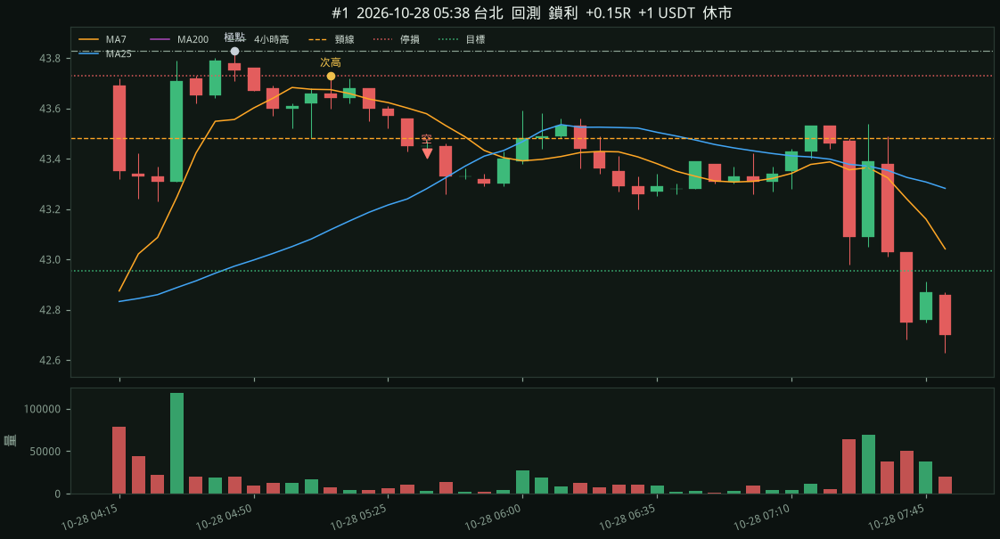
2026-10-28 00:45 台北 → 2026-11-27 00:40 台北
5 分定極點、較低高點、頸線。1 分收盤跌破頸線、收在 MA25 下、量能回到前 10 根均量才放空。每筆風險預算 100 USDT。單邊費率 0.050%，進出各計一次。張數是整數。
毛損益 +558 USDT，手續費 82，淨值最大回撤 -105 USDT。
停利 4 筆 +6.0R · 鎖利 4 筆 +0.6R · 停損 1 筆 -1.0R
現貨時段 1 筆、勝率 100%、+142 USDT。休市 8 筆、勝率 88%、+334 USDT。
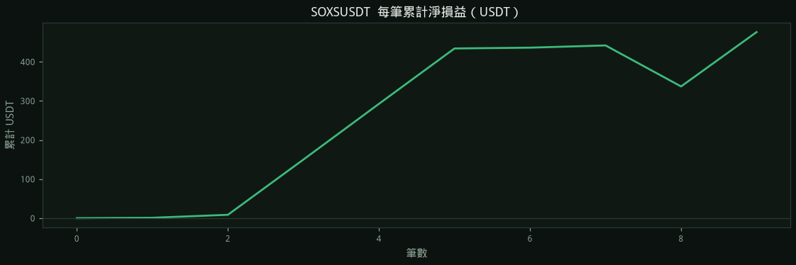
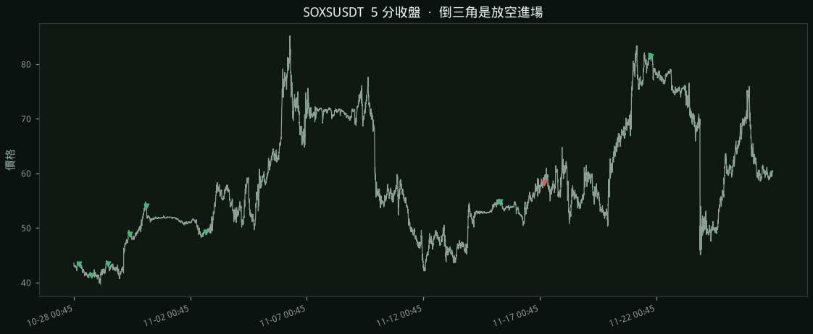
進場 43.4200 停損 43.7300 目標 42.9550 出場 43.3735 鎖利 +0.15R 極點 43.8300 頸線 43.4800 較低高點 43.7300 四小時高點 43.8300 張數 322 毛損益 +14.97 手續費 13.97 淨損益 +1.00 USDT

進場 41.3000 停損 41.8600 目標 40.4600 出場 41.2160 鎖利 +0.15R 極點 42.0100 頸線 41.3500 較低高點 41.8600 四小時高點 42.0100 張數 178 毛損益 +14.95 手續費 7.34 淨損益 +7.61 USDT
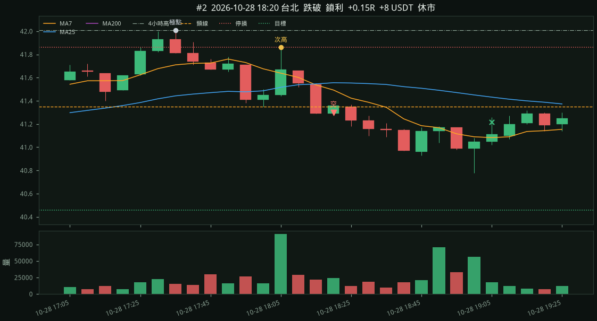
進場 43.4600 停損 43.9600 目標 42.7100 出場 42.7100 停利 +1.50R 極點 44.1900 頸線 43.4900 較低高點 43.9600 四小時高點 44.1900 張數 200 毛損益 +150.00 手續費 8.62 淨損益 +141.38 USDT
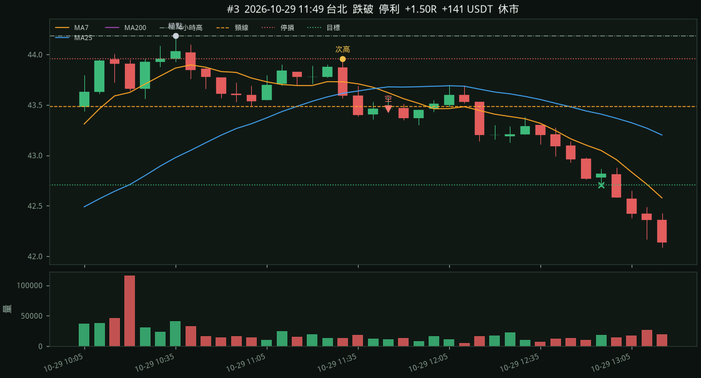
進場 48.8100 停損 49.4800 目標 47.8050 出場 47.8050 停利 +1.50R 極點 49.6100 頸線 48.8200 較低高點 49.4800 四小時高點 49.6100 張數 149 毛損益 +149.74 手續費 7.20 淨損益 +142.55 USDT
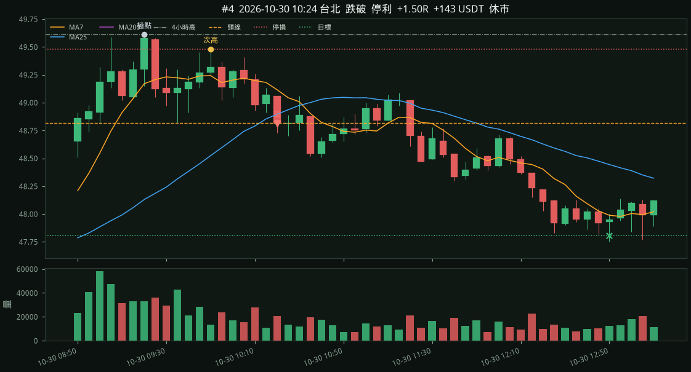
進場 53.9900 停損 54.7200 目標 52.8950 出場 52.8950 停利 +1.50R 極點 54.8500 頸線 54.1900 較低高點 54.7200 四小時高點 54.8500 張數 136 毛損益 +148.92 手續費 7.27 淨損益 +141.65 USDT
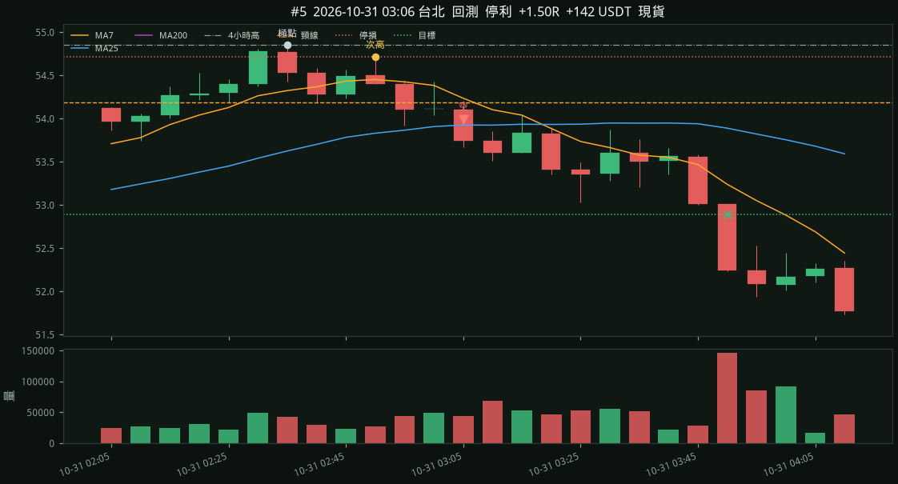
進場 49.2100 停損 49.5900 目標 48.6400 出場 49.1530 鎖利 +0.15R 極點 49.8000 頸線 49.2200 較低高點 49.5900 四小時高點 49.8000 張數 263 毛損益 +14.99 手續費 12.93 淨損益 +2.06 USDT
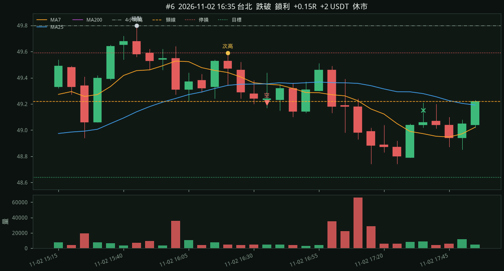
進場 54.8100 停損 55.4000 目標 53.9250 出場 54.7215 鎖利 +0.15R 極點 55.5800 頸線 54.8400 較低高點 55.4000 四小時高點 55.5800 張數 169 毛損益 +14.96 手續費 9.26 淨損益 +5.70 USDT
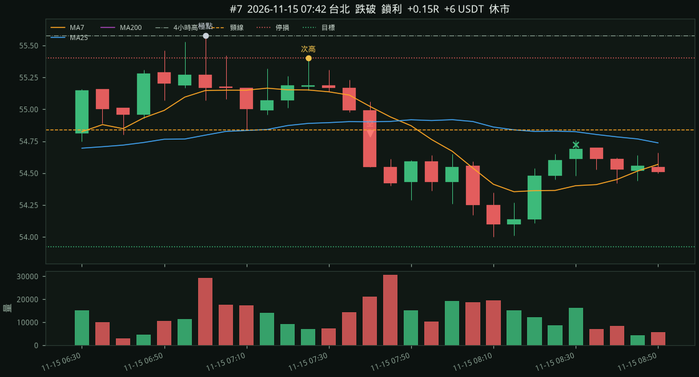
進場 58.3100 停損 59.4300 目標 56.6300 出場 59.4300 停損 -1.00R 極點 59.5000 頸線 58.4300 較低高點 59.4300 四小時高點 59.5000 張數 89 毛損益 -99.68 手續費 5.24 淨損益 -104.92 USDT
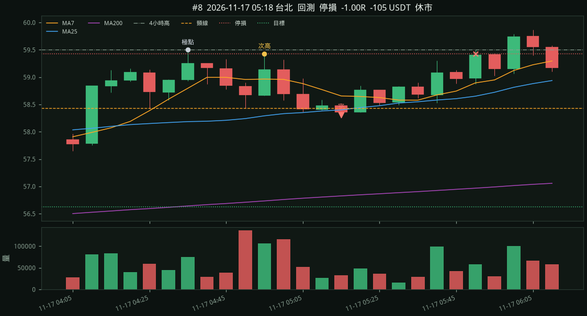
進場 81.3800 停損 82.2000 目標 80.1500 出場 80.1500 停利 +1.50R 極點 82.2900 頸線 81.6500 較低高點 82.2000 四小時高點 82.2900 張數 121 毛損益 +148.83 手續費 9.77 淨損益 +139.06 USDT
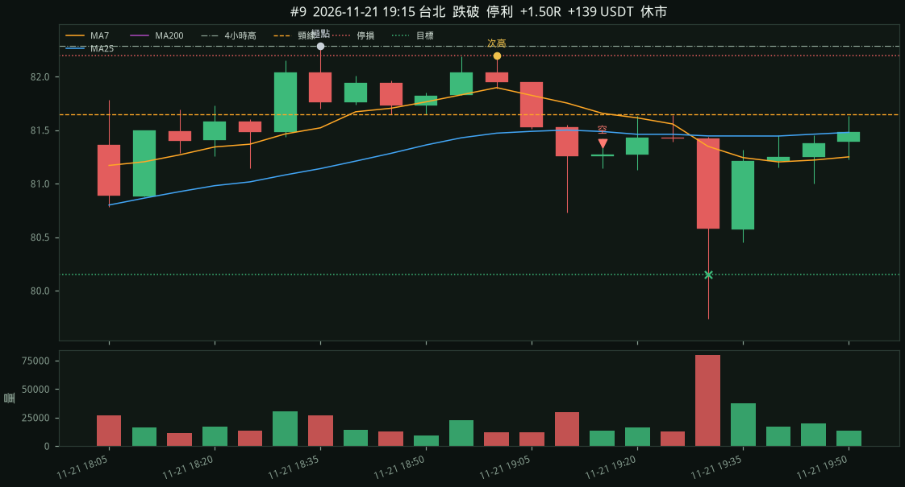